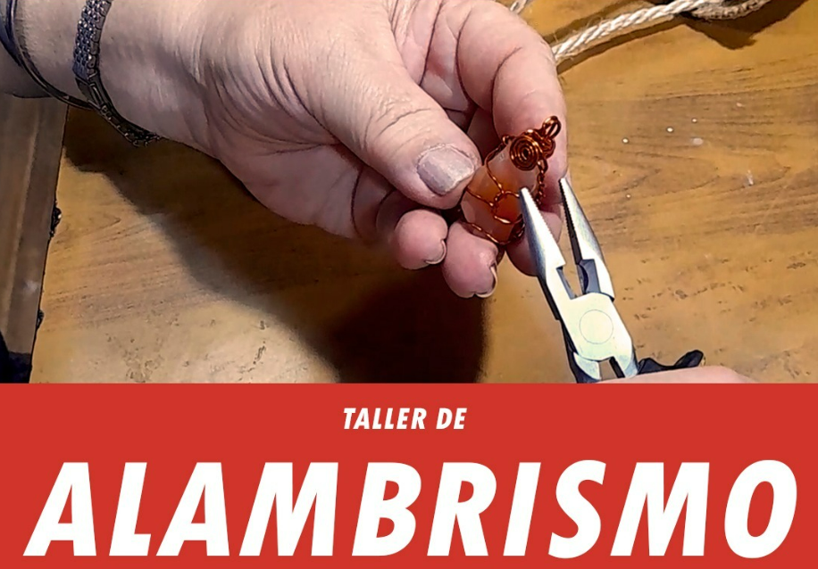

ALAMBRISMO
Profesora: Alejandra Acuña
Mayores de 18 años
Descripción y reconocimiento de herramientas y materiales Tipos y calibres de alambres. Alambrismo ornamental. Introducción de joyería artesanal. Técnicas y maniobras. Materiales: pinza plana ranurada, pinza “Rosario” o cónica, pinza de corte o “Alicate”. Hojas o cuaderno de notas, lapicera. Trozo de polar de 15 x 15 aprox. o guante viejo.
